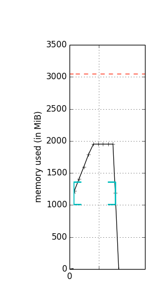
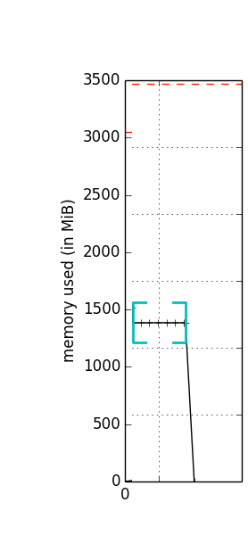

scikit-learn Sparse Utils Now Support Fused Types
Dealing with sparse data is fairly common when we are anlyzing large datasets. However, sparse function utilities in scikit-learn only support float64 currently and will therefore implicitly convert other input data types, e.g., float32, into float64, which may cause unexpected memory error. Since Cython fused types allow us to have one type definition that can refer to multiple types, we can solve potential memory wasting issue by substituting float64 with Cython fused types.
Below, I’ll briefly introduce sparse function utilities in scikit-learn and describe the work I’ve done to enhance it during GSoC.
Sparse Function Utilities
In scikit-learn, sparse data is often represented as scipy.sparse.csr_matrix or scipy.sparse.csc_matrix. However, these two matrices do not provide built-in methods to calculate important statistics such as L2 norm and variance, which are useful when we are playing with data. Therefore, scikit-learn leverages on sparsefuncs_fast.pyx which defines some helper methods for sparse matrices to handle sparse data more conveniently throughout the project.
Memory Wasting Issue
However, original implementation of sparse function utilities in scikit-learn is not memory-efficient.
Let’s take a simple function which do not use Cython fused types and will calculate L2 norm of a CSR matrix X as example:
def csr_row_norms(X):
"""L2 norm of each row in CSR matrix X."""
# 1
cdef:
unsigned int n_samples = X.shape[0]
unsigned int n_features = X.shape[1]
np.ndarray[np.float64_t, ndim=1, mode="c"] norms
np.ndarray[np.float64_t, ndim=1, mode="c"] data
np.ndarray[int, ndim=1, mode="c"] indices = X.indices
np.ndarray[int, ndim=1, mode="c"] indptr = X.indptr
np.npy_intp i, j
double sum_
# 2
norms = np.zeros(n_samples, dtype=np.float64)
# 3
data = np.asarray(X.data, dtype=np.float64) # Warning: might copy!
# 4
for i in range(n_samples):
sum_ = 0.0
for j in range(indptr[i], indptr[i + 1]):
sum_ += data[j] * data[j]
norms[i] = sum_
np.sqrt(norms)
return norms
-
Declare Cython’s static-typed (in contrast to Python’s dynamic-typed) variables to store attributes of the input CSR matrix X since static-typed variables can accelerate the computation a lot.
-
Initialize
normswith 0s. -
Since we’ve already used
cdefto declaredataas anp.ndarraywhich containsnp.float64_telement in step 1, data of X need to be converted into typenp.float64if it belongs to other data types. -
Calculate the squared sum of each row and then take squared root of it to get L2 norm.
As illustrated above, we can see that STEP 3 IS DANGEROUS because converting type of data may implicitly copy the the data and then cause memory error unexpectedly. To see how it will affect the memory space, we can use memory_profiler to monitor memory usage.
Here is the result of memory profiling if we pass a scipy.sparse.csr_matrix with np.float32 element into our example function:

It is abvious that memory usage increase dramatically because step 3 copies the data so as to convert it from np.float32 to np.float64.
To solve this problem, we can introduce Cython fused types to avoid data copying. But firstly, let’s take a brief look at Cython fused types.
Cython Fused Types
Here is official page’s clear introduction for fused types:
Fused types allow you to have one type definition that can refer to multiple types. This allows you to write a single static-typed cython algorithm that can operate on values of multiple types. Thus fused types allow generic programming and are akin to templates in C++ or generics in languages like Java / C#.
Note that Cython fused types are specialized at compile time, and are constant for a particular function invocation.
By adopting Cython fused types, our function can accept multiple types and therefore doesn’t need to do datatype conversion.
Common Pitfalls
Intuitively, in order to integrate Cython fused types to solve the memory issue described above, we will delete step 3 and change step 1 in our function as follows:
# 1
cdef:
unsigned int n_samples = X.shape[0]
unsigned int n_features = X.shape[1]
# Change type from np.float64_t to floating
np.ndarray[floating, ndim=1, mode="c"] norms
np.ndarray[floating, ndim=1, mode="c"] data = X.data
np.ndarray[int, ndim=1, mode="c"] indices = X.indices
np.ndarray[int, ndim=1, mode="c"] indptr = X.indptr
np.npy_intp i, j
double sum_
However, above changes will cause Cython compile error Invalid use of fused types, type cannot be specialized.
It seems that Cython doesn’t allow us to declare fused types variable and then assign value to it within a function if this function doesn’t accept any argument that has type involves the same fused types. Hence, we need to introduce a implementation trick here.
Enhanced Implementation
The trick I used here is to define a wrapper function and make its underlying implementation function accept fused types arguments. The reason behind this is mentioned above:
If a function accepts some argument that has a particular fused type, it can use cdef to declare and init variable with that particular fused type within its scope.
Code of enhanced implementation is showed below:
# Wrapper function
def csr_row_norms(X):
"""L2 norm of each row in CSR matrix X."""
return _csr_row_norms(X.data, X.shape, X.indices, X.indptr)
# Underlying implementation function
def _csr_row_norms(np.ndarray[floating, ndim=1, mode="c"] X_data,
shape,
np.ndarray[int, ndim=1, mode="c"] X_indices,
np.ndarray[int, ndim=1, mode="c"] X_indptr):
cdef:
unsigned int n_samples = shape[0]
unsigned int n_features = shape[1]
np.ndarray[DOUBLE, ndim=1, mode="c"] norms
np.npy_intp i, j
double sum_
norms = np.zeros(n_samples, dtype=np.float64)
for i in range(n_samples):
sum_ = 0.0
for j in range(X_indptr[i], X_indptr[i + 1]):
sum_ += X_data[j] * X_data[j]
norms[i] = sum_
return norms
Finally, to verify our enhancement, here is the result of memory profiling if we pass a scipy.sparse.csr_matrix with np.float32 element into our enhamced function:

Cool! As what figure shows, our function no longer copy the data anymore.
Summary
All of the functions in sparsefuncs_fast.pyx now support Cython fused types! Great thanks to all of the reviewers and their useful opinions.
In the next few weeks, my goal is to work on clustering algorithms such as KMeans in scikit-learn so as to make it also support Cython fused types.